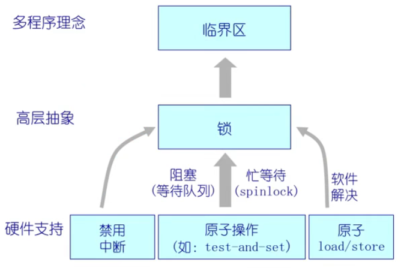
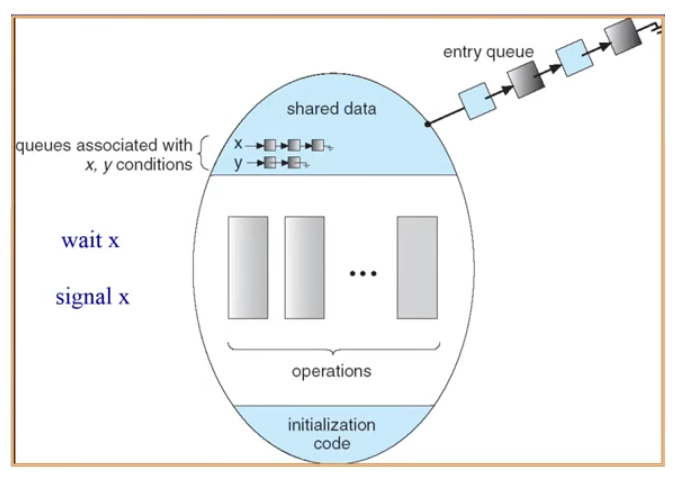
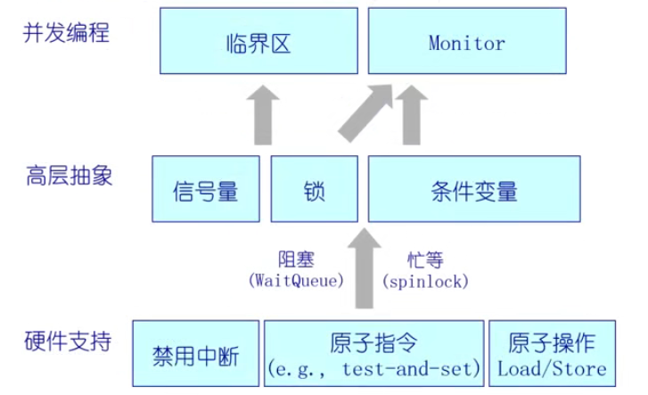

锁（Lock）可以实现对临界区的互斥访问，但多道程序设计仅考虑互斥问题是不够的。除了互斥，还需要考虑同步，以及在临界区内允许多个进程（或线程）进入临界区执行的情况。为了实现这些目标，需要借助更高层的同步互斥的语义，并利用硬件实现的原子操作来实现。
本文介绍信号量（Semaphore），包括二元信号量和一般（计数）信号量。信号量可以实现多个进程（或线程）之间的互斥和同步操作，并允许多个进程（或线程）进入临界区执行。同时，介绍了一种更高级的抽象——管程（Monitor），它可以缓解信号量机制在编写并发程序上的复杂性、简化并发编程。管程是一种程序结构，包含了一组共享变量和操作集合，用于控制对共享资源的访问。
信号量（Semaphore）
信号量操作
信号量（Semaphore）是一种抽象数据结构，用于实现多个进程（或线程）之间的同步和互斥操作的机制。它是一个整型变量（sem），可以用来控制对共享资源的访问。
一个整型变量（sem），具有 2 个原子操作：
P()操作：sem减 1，如果sem < 0，等待，否则继续；V()操作：sem加 1，如果sem <= 0，唤醒一个等待的进程 P。
信号量类似铁路，初始化 2 个资源控制信号灯，进入临界区的进程执行 P() 操作，当临界区已经有 2 个进程时，信号量不足，变为红灯。当再来的进程想要进入临界区时，只能等待，直到某一个进程离开了临界区，变为绿灯，此时进程执行 V() 操作，并将等待的进程唤醒，进入临界区。
信号量由 dijkstra 在 20 世纪 60 年代提出。
P()操作是荷兰语中的 Proberen，意为“尝试”或“试图获取资源”；V()操作是荷兰语中的 Verhogen，意为“增加”或“释放资源”。
信号量特征
- 信号量是整数；
- 信号量是被保护的变量：初始化完成后，唯一改变一个信号量的值的办法是通过
P(), V()操作（操作必须是原子）； P()操作能够阻塞、V()操作不会阻塞；- 我们假定信号量是公平的：
- 如果
V()被无限频繁调用（在同一个信号量上），那么没有线程会被阻塞在P()操作上； - 在实践中，FIFO 经常被使用，也就是先被阻塞的线程，先出。
- 如果
自旋锁（Spinlock）能否是 FIFO 类型？不能，锁已被其他线程占用时，该线程会一直自旋（忙等待）直到锁被释放。
信号量两种类型
- 二进制信号量：值可以是 0 或 1；
- 一般 / 计数信号量：值可取任意非负值。
可以通过使用一个类型的信号量来实现另一个类型的信号量（两者相互实现）。
-
使用二进制信号量实现计数信号量：
可以使用一个二进制信号量作为互斥锁（类似于互斥量），用于控制对计数信号量的访问。每当线程要进行计数操作时，需要先获取互斥锁，然后进行计数操作，最后释放互斥锁。这样可以确保每次只有一个线程可以访问计数信号量，保证计数的正确性和一致性。 -
使用计数信号量实现二进制信号量：
可以使用一个计数信号量来实现二进制信号量。计数信号量的初始值为 1，表示资源可用。当线程需要访问二进制信号量时，需要先尝试获取计数信号量。如果计数信号量的值为 1，表示资源可用，线程可以继续执行。如果计数信号量的值为 0，表示资源不可用，线程需要等待。当资源被释放时，线程释放计数信号量，将其值设置为 1，表示资源可用。
信号量两种用途
- 互斥；
- 条件同步（如调度约束：一个线程等待另一个线程的事情发生）。
信号量使用
用二进制信号量实现互斥
1 | mutex = new Semaphore(1); |
必须成对使用 P(), V() 操作：
P()操作保证互斥访问临界资源；V()操作在使用后释放临界资源；P(), V()操作不能次序错误、重复或遗漏。
用二进制信号量实现调度约束（同步）
P() 等待，V() 发出信号后，两个线程实现同步：
1 | condition = new Semaphore(0); |
生产者 - 消费者问题（线程同步）
问题描述与分析
生产者 - 消费者问题 是一个线程同步的问题，其中一个线程等待另一个线程完成某个任务。这个问题通常用于模拟生产者和消费者的情景。
例如，在有界缓冲区的生产者 - 消费者问题中：
- 一个或多个生产者生成数据并将其放入缓冲区；
- 单个消费者每次从缓冲区中取出数据；
- 在任何给定的时刻，只有一个 生产者或消费者能够访问该缓冲区。
1 | ---------- -------- ---------- |
在这种情况下，缓冲区有一个固定的大小，生产者在缓冲区已满时需要等待，而消费者在缓冲区为空时需要等待。
互斥（锁机制）是不够解决这个问题的，因为 生产者和消费者需要在某些条件下等待对方的操作完成 。因此，需要使用其他 同步机制 来协调生产者和消费者的操作。
实现关键与实现方式
实现生产者 - 消费者问题的关键点（正确定要求）：
- 在任何一个时刻，只能有一个线程操作缓冲区（互斥约束）；
- 当缓冲区为空时，消费者必须等待生产者（调度，同步约束）；
- 当缓冲区为满时，生产者必须等待消费者（调度，同步约束）。
实现方式：上述每个约束使用一个单独的信号量：
- 二进制信号量
mutex，初始化为 1，实现互斥访问； - 一般信号量
emptySem，初始化为 n，实现缓冲区空时的同步约束； - 一般信号量
fullSem，初始化为 0，实现缓冲区满时的同步约束。
实现代码
1 | class BoundedBuffer { |
上述代码中，当生产者添加了 n 个数据后，缓冲区满。此时再想添加数据时，emptySem 会小于 0，需要等待。同样地，当消费者取出了一些数据后，缓冲区空。此时再想取出数据时，fullSem 会小于 0，需要等待。缓冲区不满、也不空时，可以互斥的添加或取出数据，无需等待。
信号量实现
使用硬件原语：
- 禁用中断
- 原子指令（Test-And-Set）
类似锁：如禁用中断
1 | class Semaphore { |
管程（monitor）与条件变量
管程定义
管程（monitor）是一种程序结构，结构内的多个子程序形成的多个工作线程互斥访问共享资源——这些共享资源一般是硬件或一群变量。管程实现了 在一个时间点，最多只有一个线程在执行管程的某个子程序。与那些通过修改数据结构实现互斥访问的并发程序设计相比，管程实现很大程度上简化了程序设计。（来自 Wikipedia 的定义）
管程的目的是：将互斥和条件同步的 关注点分离 开来。
- 互斥指的是确保在同一时间只有一个进程可以访问共享资源，而条件同步指的是进程之间通过条件变量进行等待和唤醒的机制。
关注点分离（Separation of Concerns, SoC）是将计算机程序分隔为不同部分的设计原则，每一部分会有各自的关注焦点。
管程主要包含的两个组件：
- 一个锁：用于指定临界区，实现对共享资源的互斥访问；
- 零或多个条件变量：等待 / 通知信号量，用于管程并发访问共享数据。
实现管程的一般方法包括 收集相关共享数据和定义方法来访问这些共享数据：
- 共享数据通常包括需要互斥访问的临界区和条件变量等。
- 方法定义了对共享数据的操作，用于实现互斥访问和条件等待 / 通知的功能。
通过将共享数据和操作封装在一个对象或模块中，可以有效地实现对并发访问的同步控制。
概括之，管程包含一系列共享变量，以及针对这些变量的一系列操作函数（方法），这些变量和函数被封装在一个对象或模块中，便形成了管程的程序结构。
管程设计与实现
如上图所示，多个线程都想进入管程访问共享资源，这就需要一个 entry queue 等待队列，等待获取管程的锁。当某个线程取得锁后，可以进入管程的临界区，并执行管程管理的一些列操作，如函数 Wait(x) 和 Signal(x)。但当在执行某一个操作时，函数可能对共享变量的需求得不到满足，这时线程会先释放锁 ，并将自身挂到相应的条件变量关联的等待队列上，直到条件变量得到满足后， 重新获得锁，并执行相应的操作。
为了完成上述动作，需要实现如下操作：
锁 Lock：
Lock::Acquire()：等待…直到锁可用，然后抢占锁；Lock::Release()：释放锁，唤醒等待者（若有）。
条件变量 Condition variable：
- 允许线程在等待状态下进入临界区，而且可以在某个时刻原子释放锁并进入睡眠。
Wait()操作用于释放锁、进入睡眠并重新获得锁。Signal()操作用于唤醒等待者（或者使用broadcast()操作唤醒所有等待者）。
条件变量“允许线程在等待状态下（让其他线程）进入临界区”的意思是，当线程需要等待某个条件满足时，它可以调用条件变量的
Wait()操作来暂时释放锁并进入等待状态。在等待期间，其他线程 可以获得锁并访问临界区。当条件满足时，等待的线程会被唤醒，并重新获得锁，然后可以进入临界区执行相应的操作。这样做的好处是，在等待状态下，线程不会占用系统资源，同时其他线程有机会进入临界区执行任务，提高了系统的并发性能。当条件满足时，被唤醒的线程可以安全地继续执行，而不会出现竞争条件和数据不一致的问题。
条件变量的实现：
- 需要维护每个条件队列；
- 需要实现线程的条件等待
Wait()和通知Signal()。
1 | class Condition { |
上面的 Wait(lock) 函数，为什么是先释放锁、再获取锁呢？
当在执行某一个操作时，函数可能对共享变量的需求得不到满足，这时线程会先释放锁，以便其它线程可以获取锁并执行。如果不释放锁，那所有线程都将无法获取锁，而持有锁的线程也无法满足条件继续执行并释放锁，最终会造成系统崩溃。
管程解决生产者 - 消费者问题
1 | class BoundedBuffer { |
Deposit(c)和Remove(c)中的while可以改成if吗？
管程条件变量的释放处理方式
把上面的 Deposit(c) 和 Remove(c) 分别看做下图中的线程 T1 和 T2，管程条件变量的释放后的处理方式有两种：Hoare-style 和 Hoare-style。
Hansen-style 的Deposit(c)：
1 | Hansen_style::Deposit(c) { |
Hansen-style 管程：条件变量的释放仅仅是一个提示、还需要 重新检查 条件，所以用 while 反复检查。
Hoare-style 的Deposit(c)：
1 | Hoare_style::Deposit(c) { |
Hoare-style 管程：条件变量释放的同时表示放弃管程访问、释放后条件变量的状态可用，所以用 if。
- Hansen-style 管程：高效。
- Hoare-style 管程：低效。
在 Hansen-style 管程中，使用 while 循环来防止虚假唤醒（spurious wakeups）。虚假唤醒指的是当一个线程被唤醒时，条件可能并没有满足，但唤醒仍然发生。因此，使用 while 循环来检查条件是否满足，如果条件不满足，则线程继续等待。
在 Hoare-style 管程中，使用 if 语句来等待条件满足。Hoare-style 管程假设条件变量的等待队列中只有满足条件的线程，因此使用 if 语句即可。虽然在 Hoare-style 管程中也可能发生虚假唤醒，但它并不对此进行特别处理。（由 GPT 生成）
现在，这张图多了两种种并发编程的实现，即信号量和「锁 + 条件变量」的管程：

参考资料：
1：https://github.com/OXygenMoon/OperatingSystemInDepth
2：https://blog.csdn.net/weixin_53407527/article/details/125207305